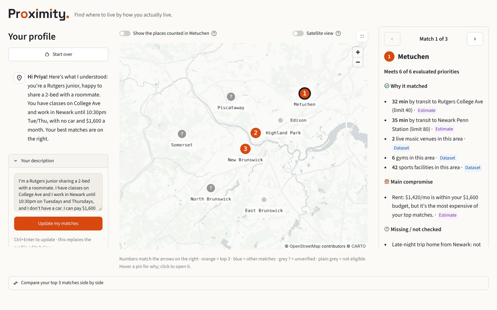
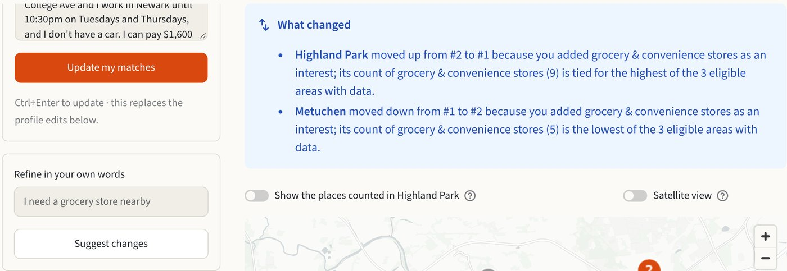
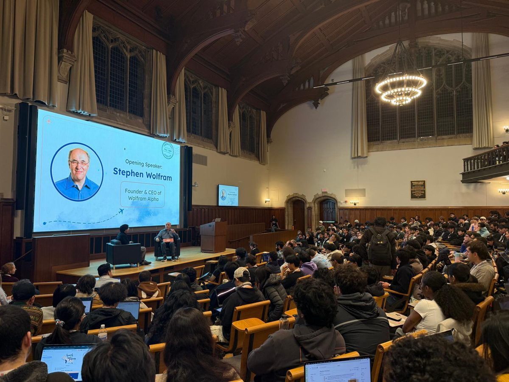
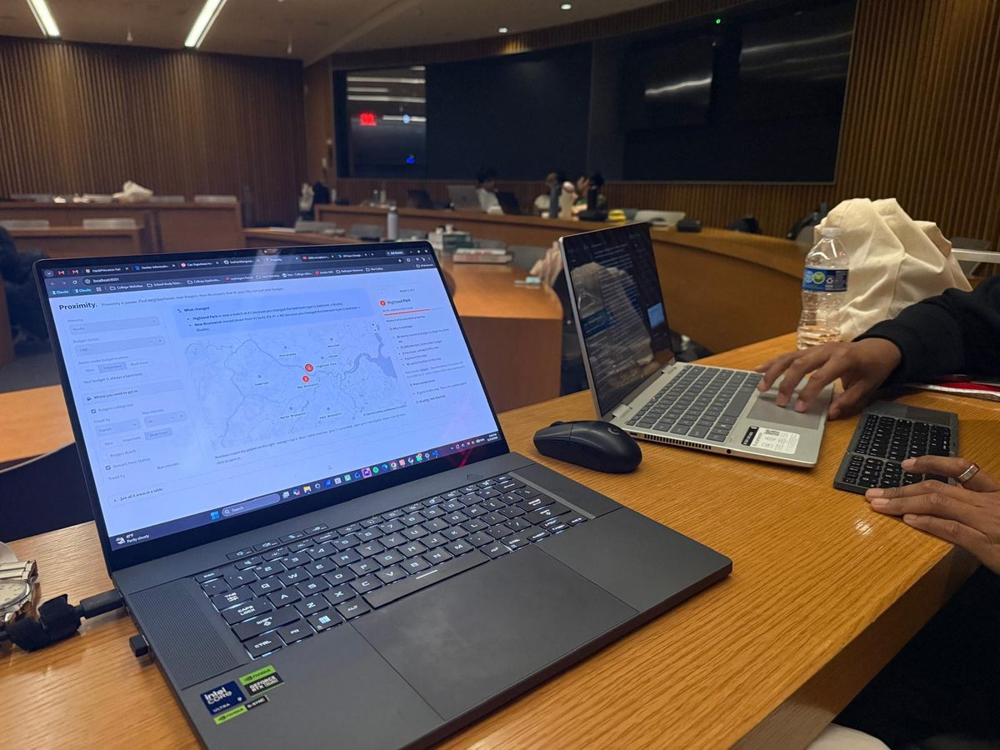
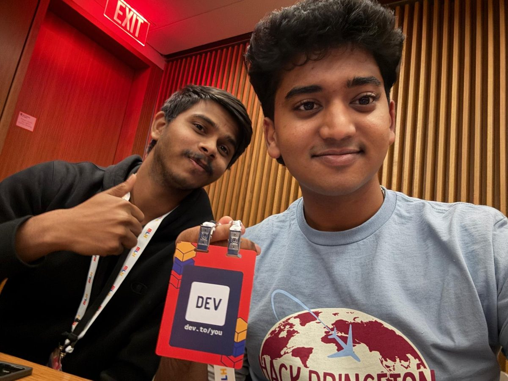
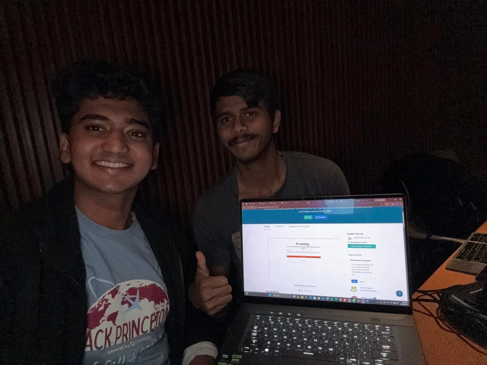
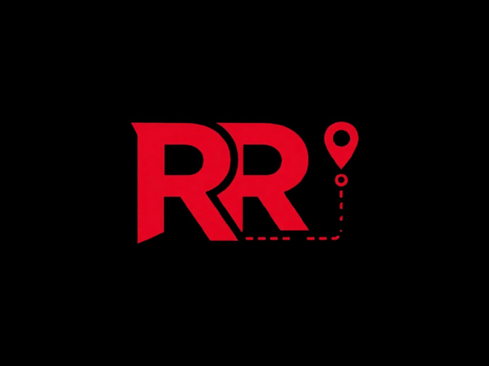

Ventures.
Three ideas I took to a stage: a neighborhood finder, a student rideshare and a pre-demolition audit.

Proximity Is Power.
We built this project in 36 hours at HackPrinceton, Princeton University. It was the first hackathon for both Siddhesh Venkat and me.
The problem
Rent sites show you the apartment and say nothing about the life around it. So students juggle Zillow, Google Maps and Reddit to work out which neighborhood actually fits.
What it does
We don't sell you an apartment. We help you find the life you want around it. Tell Proximity your budget, your commute and the places you care about, and it ranks 8 areas near Rutgers, so your next chapter looks the way you imagined.
How it works
Clear rules do the ranking, so every score comes with a reason and the same answers always give the same result. Rents come from HUD and Zillow, places from OpenStreetMap. It matches you on places, never on who lives in an area.

Change your mind in plain English
Type "I need a grocery store nearby" and Proximity, using Google Gemini, suggests the exact changes to your profile. Nothing moves until you click Apply. Then it tells you what moved, and why.
My part
- Problem framing and the scoring logic
- Interviews with 5 people choosing where to live
- Testing and bug reports
- The pitch and the Devpost
Siddhesh's part
- All the data collection
- Many of the bug fixes
- The demo example
- The logo changes
We pitched to the judges together: I gave the elevator pitch, and Siddhesh ran the live demo. While we were still shaping the idea, we also pitched it to a commercial real estate executive, who said apps like this already exist but none do it well.
What I learned
I didn't sleep either night, and I loved every stressful part of it. When you care about what you're building, sleep and boredom stop registering. We walked into judging on energy drinks, anxious and excited at once.
What's next
A live feed that pulls the biggest local events into the app on its own, and more cities beyond New Brunswick.




First pitch. Semi-finals.
I co-founded RideRutgers, a student rideshare, and built its pricing model, projecting 67% lower rider costs than Uber and Lyft.
Before pitching, our team surveyed 50+ students. 38 said they would offer rides for money.
It was the first pitch for all four of us, and we made the ScarletPitch semi-finals: Top 24 of 62 teams.

Iterum. Latin for again.
For TechStart 2026, two teammates and I designed an audit for buildings about to come down. A walk-through scan and AI flag the reusable steel, wood, brick and glass, weigh what each is worth against what it costs to remove, and hand the crew a plan. A human expert reviews every report.
I led the business side. Afterwards I showed it to 7+ real estate professionals, who said they would use it and asked to see a working pilot.